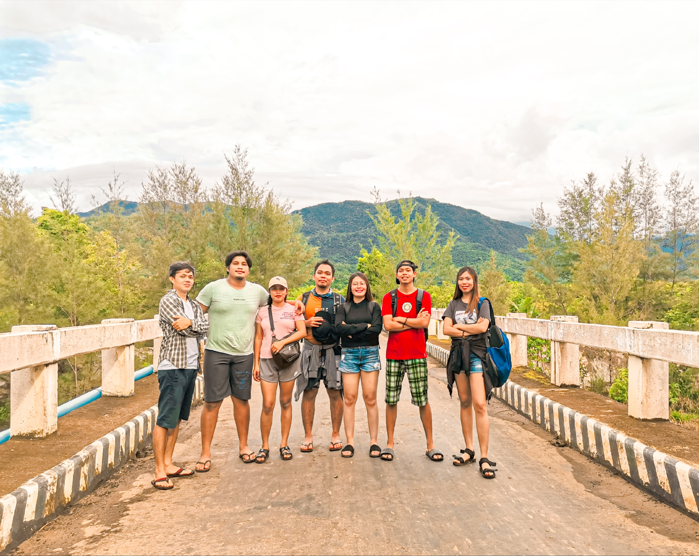
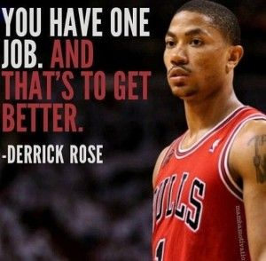

I am Joash M. Agapito
I grow in a family that is full of love and enjoyment a famliy that keeps motivating me every single a family thats is worth more than anything else. Growing up i was started to explor other things start playing basketball and other sports becuase in sport i meet a friends that become family to me. I choose this course not just becuase it is my passion also i want to explore new things also my goal is to help my parents becuase i see a lot of thier sacrefice just to give me a better future.
My friends
This awesome people i have since i was a kid this people give me lot of joy they threat me as thier own brother since i was the youngest in all of us this friends that you can only meet ones in your life they are crazy as i think they are caring and loving friends we all an adventure that will be good memories for the future. special mention to may fellow class mate the heist man you were the one giving me enjoyment at school
My hobby

One of my hobby is photography because my older brother is a photograper i was inpires from his shot i want to stolen shot and capture some smile from my love ones i love capturing moments that will give us smile if we see it i love capturing places that calmnes if we see it.
My idol
Since i was child my oldest brother was playing basketball that is why i want to play like him. I was watching TV and i Drose i love is athletism and his speed since i was in high school i started to copy his moves and this dude is a motivator becuase he has more inhuries but he keep playing he says in his interview "believe on your self even if they don't"
My Instrument

I love playing instrument even if i am not good as anyone else i just love the sound it give a peace of mind also it make me more relax becuase music for is permanent remedy
My favorite place
One of the favorite places is in the beach and sunset becuase it gives me lesson that like a sun even if you come down you will rise up in another day